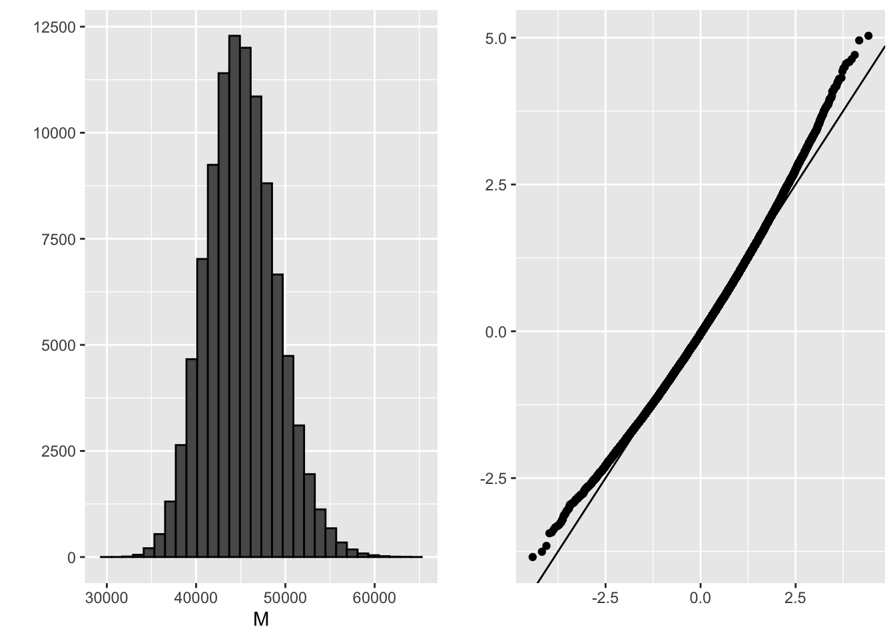
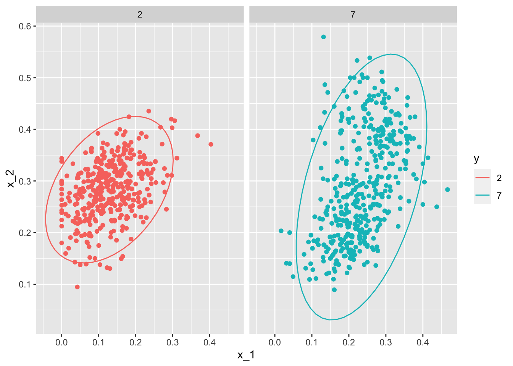

5 Section 4 - Distance, Knn, Cross Validation, and Generative Models
In the Distance, kNN, Cross Validation, and Generative Models section, you will learn about different types of discriminative and generative approaches for machine learning algorithms.
After completing this section, you will be able to:
- Use the k-nearest neighbors (kNN) algorithm.
- Understand the problems of overtraining and oversmoothing.
- Use cross-validation to reduce the true error and the apparent error.
- Use generative models such as naive Bayes, quadratic discriminant analysis (qda), and linear discriminant analysis (lda) for machine learning.
This section has three parts: nearest neighbors, cross-validation, and generative models.
5.1 Distance
There is a link to the relevant section of the textbook: Distance
Key points
- Most clustering and machine learning techniques rely on being able to define distance between observations, using features or predictors.
- With high dimensional data, a quick way to compute all the distances at once is to use the function
dist(), which computes the distance between each row and produces an object of classdist():
d <- dist(x)- We can also compute distances between predictors. If \(N\) is the number of observations, the distance between two predictors, say 1 and 2, is:
\(\text{dist}(1,2) = \sqrt{\sum_{i=1}^N (x_{i,1} - x_{i,2})^2}\)
- To compute the distance between all pairs of the 784 predictors, we can transpose the matrix first and then use dist():
d <- dist(t(x))Code
if(!exists("mnist")) mnist <- read_mnist()
set.seed(0) # if using R 3.5 or earlier
set.seed(0, sample.kind = "Rounding") # if using R 3.6 or later## Warning in set.seed(0, sample.kind = "Rounding"): non-uniform 'Rounding' sampler usedind <- which(mnist$train$labels %in% c(2,7)) %>% sample(500)
#the predictors are in x and the labels in y
x <- mnist$train$images[ind,]
y <- mnist$train$labels[ind]
y[1:3]## [1] 7 7 2x_1 <- x[1,]
x_2 <- x[2,]
x_3 <- x[3,]
#distance between two numbers
sqrt(sum((x_1 - x_2)^2))## [1] 2079.753sqrt(sum((x_1 - x_3)^2))## [1] 2252.129sqrt(sum((x_2 - x_3)^2))## [1] 2642.906#compute distance using matrix algebra
sqrt(crossprod(x_1 - x_2))## [,1]
## [1,] 2079.753sqrt(crossprod(x_1 - x_3))## [,1]
## [1,] 2252.129sqrt(crossprod(x_2 - x_3))## [,1]
## [1,] 2642.906#compute distance between each row
d <- dist(x)
class(d)## [1] "dist"as.matrix(d)[1:3,1:3]## 1 2 3
## 1 0.000 2079.753 2252.129
## 2 2079.753 0.000 2642.906
## 3 2252.129 2642.906 0.000#visualize these distances
image(as.matrix(d))#order the distance by labels
image(as.matrix(d)[order(y), order(y)])#compute distance between predictors
d <- dist(t(x))
dim(as.matrix(d))## [1] 784 784d_492 <- as.matrix(d)[492,]
image(1:28, 1:28, matrix(d_492, 28, 28))5.2 Comprehension Check - Distance
- Load the following dataset:
data(tissue_gene_expression)This dataset includes a matrix x:
dim(tissue_gene_expression$x)## [1] 189 500This matrix has the gene expression levels of 500 genes from 189 biological samples representing seven different tissues. The tissue type is stored in y:
table(tissue_gene_expression$y)##
## cerebellum colon endometrium hippocampus kidney liver placenta
## 38 34 15 31 39 26 6Which of the following lines of code computes the Euclidean distance between each observation and stores it in the object d?
d <- dist(tissue_gene_expression$x)A.
d <- dist(tissue_gene_expression$x, distance='maximum')B.
d <- dist(tissue_gene_expression)C.
d <- dist(tissue_gene_expression$x)D.
d <- cor(tissue_gene_expression$x)
- Using the dataset from Q1, compare the distances between observations 1 and 2 (both cerebellum), observations 39 and 40 (both colon), and observations 73 and 74 (both endometrium).
Distance-wise, are samples from tissues of the same type closer to each other than tissues of different type?
ind <- c(1, 2, 39, 40, 73, 74)
as.matrix(d)[ind,ind]## cerebellum_1 cerebellum_2 colon_1 colon_2 endometrium_1 endometrium_2
## cerebellum_1 0.000000 7.005922 22.694801 22.699755 21.12763 21.78079
## cerebellum_2 7.005922 0.000000 22.384821 22.069557 20.87910 20.67480
## colon_1 22.694801 22.384821 0.000000 8.191935 14.99672 18.08921
## colon_2 22.699755 22.069557 8.191935 0.000000 14.80355 17.00446
## endometrium_1 21.127629 20.879099 14.996715 14.803545 0.00000 14.29405
## endometrium_2 21.780792 20.674802 18.089213 17.004456 14.29405 0.00000- A. No, the samples from the same tissue type are not necessarily closer.
- B. The two colon samples are close to each other, but the samples from the other two tissues are not.
- C. The two cerebellum samples are close to each other, but the samples from the other two tissues are not.
- D. Yes, the samples from the same tissue type are closer to each other.
- Make a plot of all the distances using the image() function to see if the pattern you observed in Q2 is general.
Which code would correctly make the desired plot?
image(as.matrix(d))
A.
image(d)B.
image(as.matrix(d))C.
dD.
image()
5.3 Knn
There is a link to the relevant section of the textbook: k-nearest neighbors
Key points
- K-nearest neighbors (kNN) estimates the conditional probabilities in a similar way to bin smoothing. However, kNN is easier to adapt to multiple dimensions.
- Using kNN, for any point \((x_1,x_2)\) for which we want an estimate of \(p(x_1,x_2)\), we look for the k nearest points to \((x_1,x_2)\) and take an average of the 0s and 1s associated with these points. We refer to the set of points used to compute the average as the neighborhood. Larger values of k result in smoother estimates, while smaller values of k result in more flexible and more wiggly estimates.
- To implement the algorithm, we can use the
knn3()function from the caret package. There are two ways to call this function:
- We need to specify a formula and a data frame. The formula looks like this: \(\text{outcome} \sim \text{predictor}_1 + \text{predictor}_2 + \text{predictor}_3\). The
predict()function forknn3produces a probability for each class. - We can also call the function with the first argument being the matrix predictors and the second a vector of outcomes, like this:
x <- as.matrix(mnist_27$train[,2:3])
y <- mnist_27$train$y
knn_fit <- knn3(x,y)Code
data("mnist_27")
mnist_27$test %>% ggplot(aes(x_1, x_2, color = y)) + geom_point()#logistic regression
library(caret)
fit_glm <- glm(y~x_1+x_2, data=mnist_27$train, family="binomial")
p_hat_logistic <- predict(fit_glm, mnist_27$test)
y_hat_logistic <- factor(ifelse(p_hat_logistic > 0.5, 7, 2))
confusionMatrix(data = y_hat_logistic, reference = mnist_27$test$y)$overall[1]## Accuracy
## 0.76#fit knn model
knn_fit <- knn3(y ~ ., data = mnist_27$train)
x <- as.matrix(mnist_27$train[,2:3])
y <- mnist_27$train$y
knn_fit <- knn3(x, y)
knn_fit <- knn3(y ~ ., data = mnist_27$train, k=5)
y_hat_knn <- predict(knn_fit, mnist_27$test, type = "class")
confusionMatrix(data = y_hat_knn, reference = mnist_27$test$y)$overall["Accuracy"]## Accuracy
## 0.8155.4 Over-training and Over-smoothing
There is a link to the relevant sections of the textbook: Over-training and Over-smoothing
Key points
- Over-training is the reason that we have higher accuracy in the train set compared to the test set. Over-training is at its worst when we set \(k=1\). With \(k=1\), the estimate for each \((x_1,x_2)\) in the training set is obtained with just the \(y\) corresponding to that point.
- When we try a larger \(k\), the \(k\) might be so large that it does not permit enough flexibility. We call this over-smoothing.
- Note that if we use the test set to pick this \(k\), we should not expect the accompanying accuracy estimate to extrapolate to the real world. This is because even here we broke a golden rule of machine learning: we selected the \(k\) using the test set. Cross validation also provides an estimate that takes this into account.
Code
y_hat_knn <- predict(knn_fit, mnist_27$train, type = "class")
confusionMatrix(data = y_hat_knn, reference = mnist_27$train$y)$overall["Accuracy"]## Accuracy
## 0.8825y_hat_knn <- predict(knn_fit, mnist_27$test, type = "class")
confusionMatrix(data = y_hat_knn, reference = mnist_27$test$y)$overall["Accuracy"]## Accuracy
## 0.815#fit knn with k=1
knn_fit_1 <- knn3(y ~ ., data = mnist_27$train, k = 1)
y_hat_knn_1 <- predict(knn_fit_1, mnist_27$train, type = "class")
confusionMatrix(data=y_hat_knn_1, reference=mnist_27$train$y)$overall[["Accuracy"]]## [1] 0.995y_hat_knn_1 <- predict(knn_fit_1, mnist_27$test, type = "class")
confusionMatrix(data=y_hat_knn_1, reference=mnist_27$test$y)$overall[["Accuracy"]]## [1] 0.74#fit knn with k=401
knn_fit_401 <- knn3(y ~ ., data = mnist_27$train, k = 401)
y_hat_knn_401 <- predict(knn_fit_401, mnist_27$test, type = "class")
confusionMatrix(data=y_hat_knn_401, reference=mnist_27$test$y)$overall["Accuracy"]## Accuracy
## 0.79#pick the k in knn
ks <- seq(3, 251, 2)
library(purrr)
accuracy <- map_df(ks, function(k){
fit <- knn3(y ~ ., data = mnist_27$train, k = k)
y_hat <- predict(fit, mnist_27$train, type = "class")
cm_train <- confusionMatrix(data = y_hat, reference = mnist_27$train$y)
train_error <- cm_train$overall["Accuracy"]
y_hat <- predict(fit, mnist_27$test, type = "class")
cm_test <- confusionMatrix(data = y_hat, reference = mnist_27$test$y)
test_error <- cm_test$overall["Accuracy"]
tibble(train = train_error, test = test_error)
})
#pick the k that maximizes accuracy using the estimates built on the test data
ks[which.max(accuracy$test)]## [1] 41max(accuracy$test)## [1] 0.865.5 Comprehension Check - Nearest Neighbors
- Previously, we used logistic regression to predict sex based on height. Now we are going to use knn to do the same. Set the seed to 1, then use the caret package to partition the dslabs
heightsdata into a training and test set of equal size. Use thesapply()function to perform knn withkvalues ofseq(1, 101, 3)and calculate F1 scores with theF_meas()function using the default value of the relevant argument.
What is the max value of F_1?
At what value of k does the max occur?
data("heights")
# set.seed(1) # if using R 3.5 or earlier
set.seed(1, sample.kind = "Rounding") # if using R 3.6 or later## Warning in set.seed(1, sample.kind = "Rounding"): non-uniform 'Rounding' sampler usedtest_index <- createDataPartition(heights$sex, times = 1, p = 0.5, list = FALSE)
test_set <- heights[test_index, ]
train_set <- heights[-test_index, ]
ks <- seq(1, 101, 3)
F_1 <- sapply(ks, function(k){
fit <- knn3(sex ~ height, data = train_set, k = k)
y_hat <- predict(fit, test_set, type = "class") %>%
factor(levels = levels(train_set$sex))
F_meas(data = y_hat, reference = test_set$sex)
})
plot(ks, F_1)max(F_1)## [1] 0.6019417ks[which.max(F_1)]## [1] 46- Next we will use the same gene expression example used in the Comprehension Check: Distance exercises. You can load it like this:
library(dslabs)
library(caret)
data("tissue_gene_expression")First, set the seed to 1 and split the data into training and test sets with p = 0.5. Then, report the accuracy you obtain from predicting tissue type using KNN with k = seq(1, 11, 2) using sapply() or map_df(). Note: use the createDataPartition() function outside of sapply() or map_df().
# set.seed(1) # if using R 3.5 or earlier
set.seed(1, sample.kind = "Rounding") # if using R 3.6 or later## Warning in set.seed(1, sample.kind = "Rounding"): non-uniform 'Rounding' sampler usedy <- tissue_gene_expression$y
x <- tissue_gene_expression$x
test_index <- createDataPartition(y, list = FALSE)
sapply(seq(1, 11, 2), function(k){
fit <- knn3(x[-test_index,], y[-test_index], k = k)
y_hat <- predict(fit, newdata = data.frame(x=x[test_index,]),
type = "class")
mean(y_hat == y[test_index])
})## [1] 0.9895833 0.9687500 0.9479167 0.9166667 0.9166667 0.90625005.6 K-fold cross validation
There is a link to the relevant section of the textbook: K-fold cross validation
Key points
- For \(k\)-fold cross validation, we divide the dataset into a training set and a test set. We train our algorithm exclusively on the training set and use the test set only for evaluation purposes.
- For each set of algorithm parameters being considered, we want an estimate of the MSE and then we will choose the parameters with the smallest MSE. In \(k\)-fold cross validation, we randomly split the observations into \(k\) non-overlapping sets, and repeat the calculation for MSE for each of these sets. Then, we compute the average MSE and obtain an estimate of our loss. Finally, we can select the optimal parameter that minimized the MSE.
- In terms of how to select \(k\) for cross validation, larger values of \(k\) are preferable but they will also take much more computational time. For this reason, the choices of \(k=5\) and \(k=10\) are common.
5.7 Comprehension Check - Cross-validation
- Generate a set of random predictors and outcomes using the following code:
# set.seed(1996) #if you are using R 3.5 or earlier
set.seed(1996, sample.kind="Rounding") #if you are using R 3.6 or later## Warning in set.seed(1996, sample.kind = "Rounding"): non-uniform 'Rounding' sampler usedn <- 1000
p <- 10000
x <- matrix(rnorm(n*p), n, p)
colnames(x) <- paste("x", 1:ncol(x), sep = "_")
y <- rbinom(n, 1, 0.5) %>% factor()
x_subset <- x[ ,sample(p, 100)]Because x and y are completely independent, you should not be able to predict y using x with accuracy greater than 0.5. Confirm this by running cross-validation using logistic regression to fit the model. Because we have so many predictors, we selected a random sample x_subset. Use the subset when training the model.
Which code correctly performs this cross-validation?
fit <- train(x_subset, y, method = "glm")
fit$results## parameter Accuracy Kappa AccuracySD KappaSD
## 1 none 0.5078406 0.01318925 0.02336971 0.04626366- A.
fit <- train(x_subset, y)
fit$results- B.
fit <- train(x_subset, y, method = "glm")
fit$results- C.
fit <- train(y, x_subset, method = "glm")
fit$results- D.
fit <- test(x_subset, y, method = "glm")
fit$results- Now, instead of using a random selection of predictors, we are going to search for those that are most predictive of the outcome. We can do this by comparing the values for the \(y=1\) group to those in the \(y=0\) group, for each predictor, using a t-test. You can do perform this step like this:
if(!require(BiocManager)) install.packages("BiocManager")
BiocManager::install("genefilter")
library(genefilter)
tt <- colttests(x, y)Which of the following lines of code correctly creates a vector of the p-values called pvals?
pvals <- tt$p.valueA.
pvals <- tt$dmB.
pvals <- tt$statisticC.
pvals <- ttD.
pvals <- tt$p.value
- Create an index
indwith the column numbers of the predictors that were statistically significantly associated withy. Use a p-value cutoff of 0.01 to define statistically significantly.
How many predictors survive this cutoff?
ind <- which(pvals <= 0.01)
length(ind)- Now re-run the cross-validation after redefinining
x_subsetto be the subset ofxdefined by the columns showing statistically significant association withy.
What is the accuracy now?
x_subset <- x[,ind]
fit <- train(x_subset, y, method = "glm")
fit$results## parameter Accuracy Kappa AccuracySD KappaSD
## 1 none 0.5078234 0.009411212 0.02020397 0.03922244- Re-run the cross-validation again, but this time using kNN. Try out the following grid
k = seq(101, 301, 25)of tuning parameters. Make a plot of the resulting accuracies.
Which code is correct?
fit <- train(x_subset, y, method = "knn", tuneGrid = data.frame(k = seq(101, 301, 25)))
ggplot(fit)- A.
fit <- train(x_subset, y, method = "knn", tuneGrid = data.frame(k = seq(101, 301, 25)))
ggplot(fit)- B.
fit <- train(x_subset, y, method = "knn")
ggplot(fit)- C.
fit <- train(x_subset, y, method = "knn", tuneGrid = data.frame(k = seq(103, 301, 25)))
ggplot(fit)- D.
fit <- train(x_subset, y, method = "knn", tuneGrid = data.frame(k = seq(101, 301, 5)))
ggplot(fit)- In the previous exercises, we see that despite the fact that
xandyare completely independent, we were able to predictywith accuracy higher than 70%. We must be doing something wrong then.
What is it?
-
A. The function
train()estimates accuracy on the same data it uses to train the algorithm. - B. We are overfitting the model by including 100 predictors.
- C. We used the entire dataset to select the columns used in the model.
- D. The high accuracy is just due to random variability.
- Use the
train()function with kNN to select the bestkfor predicting tissue from gene expression on thetissue_gene_expressiondataset from dslabs. Tryk = seq(1,7,2)for tuning parameters. For this question, do not split the data into test and train sets (understand this can lead to overfitting, but ignore this for now).
What value of k results in the highest accuracy?
data("tissue_gene_expression")
fit <- with(tissue_gene_expression, train(x, y, method = "knn", tuneGrid = data.frame( k = seq(1, 7, 2))))
ggplot(fit)
fit$results## k Accuracy Kappa AccuracySD KappaSD
## 1 1 0.9910881 0.9892456 0.01127300 0.01349575
## 2 3 0.9820243 0.9781738 0.01389797 0.01683721
## 3 5 0.9806558 0.9765964 0.02484299 0.02995977
## 4 7 0.9720962 0.9660514 0.03007035 0.036501275.8 Bootstrap
There is a link to the relevant section of the textbook: Bootstrap
Key points
- When we dont have access to the entire population, we can use bootstrap to estimate the population median \(m\).
- The bootstrap permits us to approximate a Monte Carlo simulation without access to the entire distribution. The general idea is relatively simple. We act as if the observed sample is the population. We then sample datasets (with replacement) of the same sample size as the original dataset. Then we compute the summary statistic, in this case the median, on this bootstrap sample.
- Note that we can use ideas similar to those used in the bootstrap in cross validation: instead of dividing the data into equal partitions, we simply bootstrap many times.
Code
n <- 10^6
income <- 10^(rnorm(n, log10(45000), log10(3)))
qplot(log10(income), bins = 30, color = I("black"))m <- median(income)
m## [1] 44986.86set.seed(1)
#use set.seed(1, sample.kind="Rounding") instead if using R 3.6 or later
N <- 250
X <- sample(income, N)
M<- median(X)
M## [1] 47024.18library(gridExtra)##
## Attaching package: 'gridExtra'## The following object is masked from 'package:dplyr':
##
## combineB <- 10^5
M <- replicate(B, {
X <- sample(income, N)
median(X)
})
p1 <- qplot(M, bins = 30, color = I("black"))
p2 <- qplot(sample = scale(M)) + geom_abline()
grid.arrange(p1, p2, ncol = 2)
mean(M)## [1] 45132.14sd(M)## [1] 3912.368B <- 10^5
M_star <- replicate(B, {
X_star <- sample(X, N, replace = TRUE)
median(X_star)
})
tibble(monte_carlo = sort(M), bootstrap = sort(M_star)) %>%
qplot(monte_carlo, bootstrap, data = .) +
geom_abline()quantile(M, c(0.05, 0.95))## 5% 95%
## 38996.50 51811.42quantile(M_star, c(0.05, 0.95))## 5% 95%
## 37112.39 51462.43median(X) + 1.96 * sd(X) / sqrt(N) * c(-1, 1)## [1] 33154.08 60894.28mean(M) + 1.96 * sd(M) * c(-1,1)## [1] 37463.90 52800.38mean(M_star) + 1.96 * sd(M_star) * c(-1, 1)## [1] 36913.52 53897.735.9 Comprehension Check - Bootstrap
- The
createResample()function can be used to create bootstrap samples. For example, we can create the indexes for 10 bootstrap samples for themnist_27dataset like this:
data(mnist_27)
# set.seed(1995) # if R 3.5 or earlier
set.seed(1995, sample.kind="Rounding") # if R 3.6 or later## Warning in set.seed(1995, sample.kind = "Rounding"): non-uniform 'Rounding' sampler usedindexes <- createResample(mnist_27$train$y, 10)How many times do 3, 4, and 7 appear in the first resampled index?
sum(indexes[[1]] == 3)## [1] 1sum(indexes[[1]] == 4)## [1] 4sum(indexes[[1]] == 7)## [1] 0- We see that some numbers appear more than once and others appear no times. This has to be this way for each dataset to be independent. Repeat the exercise for all the resampled indexes.
What is the total number of times that 3 appears in all of the resampled indexes?
x=sapply(indexes, function(ind){
sum(ind == 3)
})
sum(x)## [1] 11- Generate a random dataset using the following code:
y <- rnorm(100, 0, 1)Estimate the 75th quantile, which we know is qnorm(0.75), with the sample quantile: quantile(y, 0.75).
Now, set the seed to 1 and perform a Monte Carlo simulation with 10,000 repetitions, generating the random dataset and estimating the 75th quantile each time. What is the expected value and standard error of the 75th quantile?
Report all answers to at least 3 decimal digits.
# set.seed(1) # # if R 3.5 or earlier
set.seed(1, sample.kind = "Rounding") # if R 3.6 or later## Warning in set.seed(1, sample.kind = "Rounding"): non-uniform 'Rounding' sampler usedB <- 10000
q_75 <- replicate(B, {
y <- rnorm(100, 0, 1)
quantile(y, 0.75)
})
mean(q_75)## [1] 0.6656107sd(q_75)## [1] 0.1353809- In practice, we cant run a Monte Carlo simulation. Use the sample:
# set.seed(1) # if R 3.5 or earlier
set.seed(1, sample.kind = "Rounding") # if R 3.6 or later## Warning in set.seed(1, sample.kind = "Rounding"): non-uniform 'Rounding' sampler usedy <- rnorm(100, 0, 1)Set the seed to 1 again after generating y and use 10 bootstrap samples to estimate the expected value and standard error of the 75th quantile.
# set.seed(1) # if R 3.5 or earlier
set.seed(1, sample.kind = "Rounding") # if R 3.6 or later## Warning in set.seed(1, sample.kind = "Rounding"): non-uniform 'Rounding' sampler usedy <- rnorm(100, 0, 1)
# set.seed(1) # if R 3.5 or earlier
set.seed(1, sample.kind="Rounding") # if R 3.6 or later## Warning in set.seed(1, sample.kind = "Rounding"): non-uniform 'Rounding' sampler usedindexes <- createResample(y, 10)
q_75_star <- sapply(indexes, function(ind){
y_star <- y[ind]
quantile(y_star, 0.75)
})
mean(q_75_star)## [1] 0.7312648sd(q_75_star)## [1] 0.07419278- Repeat the exercise from Q4 but with 10,000 bootstrap samples instead of 10. Set the seed to 1 first.
# set.seed(1) # # if R 3.5 or earlier
set.seed(1, sample.kind = "Rounding") # if R 3.6 or later## Warning in set.seed(1, sample.kind = "Rounding"): non-uniform 'Rounding' sampler usedindexes <- createResample(y, 10000)
q_75_star <- sapply(indexes, function(ind){
y_star <- y[ind]
quantile(y_star, 0.75)
})
mean(q_75_star)## [1] 0.6737512sd(q_75_star)## [1] 0.0930575- When doing bootstrap sampling, the simulated samples are drawn from the empirical distribution of the original data.
True or False: The bootstrap is particularly useful in situations when we do not have access to the distribution or it is unknown.
- A. True
- B. False
5.10 Generative Models
There is a link to the relevant section of the textbook: Generative models
**Key points
- Discriminative approaches estimate the conditional probability directly and do not consider the distribution of the predictors.
- Generative models are methods that model the joint distribution and \(X\) (we model how the entire data, \(X\) and \(Y\), are generated).
5.11 Naive Bayes
There is a link to the relevant section of the textbook: Naive Bayes
Key points
- Bayes rule:
\(p(x) = Pr(Y = 1|X = x) = \frac{f_{X|Y=1}(X)Pr(Y = 1)}{f_{X|Y=0}(X)Pr(Y = 0) + f_{X|Y=1}(X)Pr(Y = 1)}\)
with \(f_{X|Y=1}\) and \(f_{X|Y=0}\) representing the distribution functions of the predictor \(X\) for the two classes \(Y=1\) and \(Y=0\).
- The Naive Bayes approach is similar to the logistic regression prediction mathematically. However, we leave the demonstration to a more advanced text, such as The Elements of Statistical Learning by Hastie, Tibshirani, and Friedman.
Code
# Generating train and test set
data("heights")
y <- heights$height
set.seed(2)
test_index <- createDataPartition(y, times = 1, p = 0.5, list = FALSE)
train_set <- heights %>% slice(-test_index)
test_set <- heights %>% slice(test_index)
# Estimating averages and standard deviations
params <- train_set %>%
group_by(sex) %>%
summarize(avg = mean(height), sd = sd(height))## `summarise()` ungrouping output (override with `.groups` argument)params## # A tibble: 2 x 3
## sex avg sd
## <fct> <dbl> <dbl>
## 1 Female 64.5 4.02
## 2 Male 69.3 3.52# Estimating the prevalence
pi <- train_set %>% summarize(pi=mean(sex=="Female")) %>% pull(pi)
pi## [1] 0.2290076# Getting an actual rule
x <- test_set$height
f0 <- dnorm(x, params$avg[2], params$sd[2])
f1 <- dnorm(x, params$avg[1], params$sd[1])
p_hat_bayes <- f1*pi / (f1*pi + f0*(1 - pi))5.12 Controlling Prevalence
There is a link to the relevant section of the textbook: Controlling prevalence
Key points
- The Naive Bayes approach includes a parameter to account for differences in prevalence \(\pi = Pr(Y = 1)\). If we use hats to denote the estimates, we can write \(\hat{p(x)}\) as:
\(\hat{p}(x)= \frac{\hat{f}_{X|Y=1}(x) \hat{\pi}}{ \hat{f}_{X|Y=0}(x)(1-\hat{\pi}) + \hat{f}_{X|Y=1}(x)\hat{\pi} }\)
- The Naive Bayes approach gives us a direct way to correct the imbalance between sensitivity and specificity by simply forcing \(\hat{\pi}\) to be whatever value we want it to be in order to better balance specificity and sensitivity.
Code
# Computing sensitivity
y_hat_bayes <- ifelse(p_hat_bayes > 0.5, "Female", "Male")
sensitivity(data = factor(y_hat_bayes), reference = factor(test_set$sex))## [1] 0.2627119# Computing specificity
specificity(data = factor(y_hat_bayes), reference = factor(test_set$sex))## [1] 0.9534314# Changing the cutoff of the decision rule
p_hat_bayes_unbiased <- f1 * 0.5 / (f1 * 0.5 + f0 * (1 - 0.5))
y_hat_bayes_unbiased <- ifelse(p_hat_bayes_unbiased > 0.5, "Female", "Male")
sensitivity(data = factor(y_hat_bayes_unbiased), reference = factor(test_set$sex))## [1] 0.7118644specificity(data = factor(y_hat_bayes_unbiased), reference = factor(test_set$sex))## [1] 0.8210784# Draw plot
qplot(x, p_hat_bayes_unbiased, geom = "line") +
geom_hline(yintercept = 0.5, lty = 2) +
geom_vline(xintercept = 67, lty = 2)
5.13 qda and lda
There is a link to the relevant sections of the textbook: Quadratic discriminant analysis and Linear discriminant analysis
Key points
- Quadratic discriminant analysis (QDA) is a version of Naive Bayes in which we assume that the distributions \(p_{X|Y=1}(x)\) and \(p_{X|Y=0}(x)\) are multivariate normal.
- QDA can work well with a few predictors, but it becomes harder to use as the number of predictors increases. Once the number of parameters approaches the size of our data, the method becomes impractical due to overfitting.
- Forcing the assumption that all predictors share the same standard deviations and correlations, the boundary will be a line, just as with logistic regression. For this reason, we call the method linear discriminant analysis (LDA).
- In the case of LDA, the lack of flexibility does not permit us to capture the non-linearity in the true conditional probability function.
Code
QDA
# Load data
data("mnist_27")
# Estimate parameters from the data
params <- mnist_27$train %>%
group_by(y) %>%
summarize(avg_1 = mean(x_1), avg_2 = mean(x_2),
sd_1 = sd(x_1), sd_2 = sd(x_2),
r = cor(x_1, x_2))## `summarise()` ungrouping output (override with `.groups` argument)# Contour plots
mnist_27$train %>% mutate(y = factor(y)) %>%
ggplot(aes(x_1, x_2, fill = y, color = y)) +
geom_point(show.legend = FALSE) +
stat_ellipse(type="norm", lwd = 1.5)# Fit model
library(caret)
train_qda <- train(y ~., method = "qda", data = mnist_27$train)
# Obtain predictors and accuracy
y_hat <- predict(train_qda, mnist_27$test)
confusionMatrix(data = y_hat, reference = mnist_27$test$y)$overall["Accuracy"]## Accuracy
## 0.82# Draw separate plots for 2s and 7s
mnist_27$train %>% mutate(y = factor(y)) %>%
ggplot(aes(x_1, x_2, fill = y, color = y)) +
geom_point(show.legend = FALSE) +
stat_ellipse(type="norm") +
facet_wrap(~y)
LDA
params <- mnist_27$train %>%
group_by(y) %>%
summarize(avg_1 = mean(x_1), avg_2 = mean(x_2),
sd_1 = sd(x_1), sd_2 = sd(x_2),
r = cor(x_1, x_2))## `summarise()` ungrouping output (override with `.groups` argument)params <- params %>% mutate(sd_1 = mean(sd_1), sd_2 = mean(sd_2), r = mean(r))
train_lda <- train(y ~., method = "lda", data = mnist_27$train)
y_hat <- predict(train_lda, mnist_27$test)
confusionMatrix(data = y_hat, reference = mnist_27$test$y)$overall["Accuracy"]## Accuracy
## 0.755.14 Case Study - More than Three Classes
There is a link to the relevant section of the textbook: Case study: more than three classes
Key points
- In this case study, we will briefly give a slightly more complex example: one with 3 classes instead of 2. Then we will fit QDA, LDA, and KNN models for prediction.
- Generative models can be very powerful, but only when we are able to successfully approximate the joint distribution of predictors conditioned on each class.
Code
if(!exists("mnist"))mnist <- read_mnist()
set.seed(3456) #use set.seed(3456, sample.kind="Rounding") in R 3.6 or later
index_127 <- sample(which(mnist$train$labels %in% c(1,2,7)), 2000)
y <- mnist$train$labels[index_127]
x <- mnist$train$images[index_127,]
index_train <- createDataPartition(y, p=0.8, list = FALSE)
# get the quadrants
# temporary object to help figure out the quadrants
row_column <- expand.grid(row=1:28, col=1:28)
upper_left_ind <- which(row_column$col <= 14 & row_column$row <= 14)
lower_right_ind <- which(row_column$col > 14 & row_column$row > 14)
# binarize the values. Above 200 is ink, below is no ink
x <- x > 200
# cbind proportion of pixels in upper right quadrant and proportion of pixels in lower right quadrant
x <- cbind(rowSums(x[ ,upper_left_ind])/rowSums(x),
rowSums(x[ ,lower_right_ind])/rowSums(x))
train_set <- data.frame(y = factor(y[index_train]),
x_1 = x[index_train,1],
x_2 = x[index_train,2])
test_set <- data.frame(y = factor(y[-index_train]),
x_1 = x[-index_train,1],
x_2 = x[-index_train,2])
train_set %>% ggplot(aes(x_1, x_2, color=y)) + geom_point()train_qda <- train(y ~ ., method = "qda", data = train_set)
predict(train_qda, test_set, type = "prob") %>% head()## 1 2 7
## 1 0.22232613 0.6596410 0.11803290
## 2 0.19256640 0.4535212 0.35391242
## 3 0.62749331 0.3220448 0.05046191
## 4 0.04623381 0.1008304 0.85293583
## 5 0.21671529 0.6229295 0.16035523
## 6 0.12669776 0.3349700 0.53833219predict(train_qda, test_set) %>% head()## [1] 2 2 1 7 2 7
## Levels: 1 2 7confusionMatrix(predict(train_qda, test_set), test_set$y)$table## Reference
## Prediction 1 2 7
## 1 111 17 7
## 2 14 80 17
## 7 19 25 109confusionMatrix(predict(train_qda, test_set), test_set$y)$overall["Accuracy"]## Accuracy
## 0.7518797train_lda <- train(y ~ ., method = "lda", data = train_set)
confusionMatrix(predict(train_lda, test_set), test_set$y)$overall["Accuracy"]## Accuracy
## 0.6641604train_knn <- train(y ~ ., method = "knn", tuneGrid = data.frame(k = seq(15, 51, 2)),
data = train_set)
confusionMatrix(predict(train_knn, test_set), test_set$y)$overall["Accuracy"]## Accuracy
## 0.7719298train_set %>% mutate(y = factor(y)) %>% ggplot(aes(x_1, x_2, fill = y, color=y)) + geom_point(show.legend = FALSE) + stat_ellipse(type="norm")5.15 Comprehension Check - Generative Models
In the following exercises, we are going to apply LDA and QDA to the tissue_gene_expression dataset from dslabs. We will start with simple examples based on this dataset and then develop a realistic example.
- Create a dataset of samples from just cerebellum and hippocampus, two parts of the brain, and a predictor matrix with 10 randomly selected columns using the following code:
data("tissue_gene_expression")
# set.seed(1993) #if using R 3.5 or earlier
set.seed(1993, sample.kind="Rounding") # if using R 3.6 or later## Warning in set.seed(1993, sample.kind = "Rounding"): non-uniform 'Rounding' sampler usedind <- which(tissue_gene_expression$y %in% c("cerebellum", "hippocampus"))
y <- droplevels(tissue_gene_expression$y[ind])
x <- tissue_gene_expression$x[ind, ]
x <- x[, sample(ncol(x), 10)]Use the train() function to estimate the accuracy of LDA. For this question, use the version of x and y created with the code above: do not split them or tissue_gene_expression into training and test sets (understand this can lead to overfitting). Report the accuracy from the train() results (do not make predictions).
What is the accuracy? Enter your answer as a percentage or decimal (eg 50% or 0.50) to at least the thousandths place.
fit_lda <- train(x, y, method = "lda")
fit_lda$results["Accuracy"]## Accuracy
## 1 0.8707879- In this case, LDA fits two 10-dimensional normal distributions. Look at the fitted model by looking at the
finalModelcomponent of the result oftrain(). Notice there is a component calledmeansthat includes the estimated means of both distributions. Plot the mean vectors against each other and determine which predictors (genes) appear to be driving the algorithm.
Which TWO genes appear to be driving the algorithm (i.e.the two genes with the highest means)?
t(fit_lda$finalModel$means) %>% data.frame() %>%
mutate(predictor_name = rownames(.)) %>%
ggplot(aes(cerebellum, hippocampus, label = predictor_name)) +
geom_point() +
geom_text() +
geom_abline()- A. PLCB1
- B. RAB1B
- C. MSH4
- D. OAZ2
- E. SPI1
- F. SAPCD1
- G. HEMK1
- Repeat the exercise in Q1 with QDA.
Create a dataset of samples from just cerebellum and hippocampus, two parts of the brain, and a predictor matrix with 10 randomly selected columns using the following code:
data("tissue_gene_expression")
set.seed(1993) #set.seed(1993, sample.kind="Rounding") if using R 3.6 or later
ind <- which(tissue_gene_expression$y %in% c("cerebellum", "hippocampus"))
y <- droplevels(tissue_gene_expression$y[ind])
x <- tissue_gene_expression$x[ind, ]
x <- x[, sample(ncol(x), 10)]Use the train() function to estimate the accuracy of QDA. For this question, use the version of x and y created above instead of the default from tissue_gene_expression. Do not split them into training and test sets (understand this can lead to overfitting).
What is the accuracy?
fit_qda <- train(x, y, method = "qda")
fit_qda$results["Accuracy"]## Accuracy
## 1 0.8147954- Which TWO genes drive the algorithm when using QDA instead of LDA (i.e.the two genes with the highest means)?
t(fit_qda$finalModel$means) %>% data.frame() %>%
mutate(predictor_name = rownames(.)) %>%
ggplot(aes(cerebellum, hippocampus, label = predictor_name)) +
geom_point() +
geom_text() +
geom_abline()
- A. PLCB1
- B. RAB1B
- C. MSH4
- D. OAZ2
- E. SPI1
- F. SAPCD1
- G. HEMK1
- One thing we saw in the previous plots is that the values of the predictors correlate in both groups: some predictors are low in both groups and others high in both groups. The mean value of each predictor found in
colMeans(x)is not informative or useful for prediction and often for purposes of interpretation, it is useful to center or scale each column. This can be achieved with thepreProcessargument intrain(). Re-run LDA withpreProcess = "center". Note that accuracy does not change, but it is now easier to identify the predictors that differ more between groups than based on the plot made in Q2.
Which TWO genes drive the algorithm after performing the scaling?
fit_lda <- train(x, y, method = "lda", preProcess = "center")
fit_lda$results["Accuracy"]## Accuracy
## 1 0.8595389t(fit_lda$finalModel$means) %>% data.frame() %>%
mutate(predictor_name = rownames(.)) %>%
ggplot(aes(predictor_name, hippocampus)) +
geom_point() +
coord_flip()- A. C21orf62
- B. PLCB1
- C. RAB1B
- D. MSH4
- E. OAZ2
- F. SPI1
- G. SAPCD1
- H. IL18R1
You can see that it is different genes driving the algorithm now. This is because the predictor means change. In the previous exercises we saw that both LDA and QDA approaches worked well. For further exploration of the data, you can plot the predictor values for the two genes with the largest differences between the two groups in a scatter plot to see how they appear to follow a bivariate distribution as assumed by the LDA and QDA approaches, coloring the points by the outcome, using the following code:
d <- apply(fit_lda$finalModel$means, 2, diff)
ind <- order(abs(d), decreasing = TRUE)[1:2]
plot(x[, ind], col = y)- Now we are going to increase the complexity of the challenge slightly. Repeat the LDA analysis from Q5 but using all tissue types. Use the following code to create your dataset:
data("tissue_gene_expression")
# set.seed(1993) # if using R 3.5 or earlier
set.seed(1993, sample.kind="Rounding") # if using R 3.6 or later## Warning in set.seed(1993, sample.kind = "Rounding"): non-uniform 'Rounding' sampler usedy <- tissue_gene_expression$y
x <- tissue_gene_expression$x
x <- x[, sample(ncol(x), 10)]What is the accuracy using LDA?
fit_lda <- train(x, y, method = "lda", preProcess = c("center"))
fit_lda$results["Accuracy"]## Accuracy
## 1 0.8194837